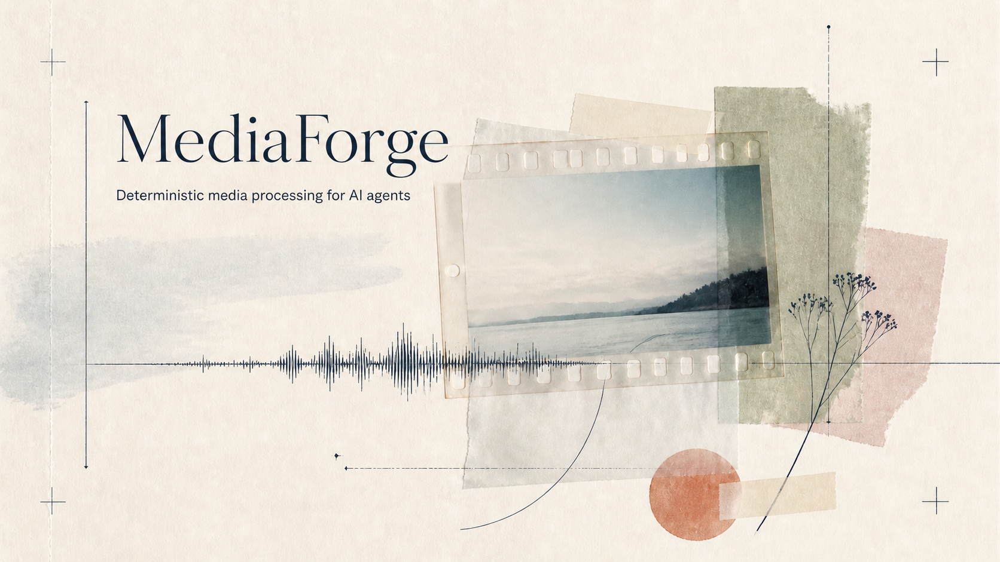

01
inspect先建立事实Start with facts
读取容器、流、编码、字幕、HDR 和元数据。Read containers, streams, codecs, subtitles, HDR, and metadata.
面向 Agent 的媒体工具MEDIA TOOLING FOR AGENTS
MediaForge 将 FFmpeg 的复杂命令面收敛成清晰的检查、规划、执行和验证流程。每一次调用都有明确输入、可读计划和可复现结果。 MediaForge turns FFmpeg's broad command surface into a clear inspect, plan, execute, and verify loop. Every call has explicit inputs, a readable plan, and a reproducible result.

把一次媒体操作拆成四个可以被 Agent 观察、解释和复核的瞬间。Every media operation becomes four moments an Agent can observe, explain, and verify.
inspect读取容器、流、编码、字幕、HDR 和元数据。Read containers, streams, codecs, subtitles, HDR, and metadata.
plan比较 copy、remux 和 transcode，提前展示警告与命令。Compare copy, remux, and transcode before showing warnings and arguments.
execute拒绝路径冲突，不隐式覆盖，进度与结果分离。Reject collisions, avoid implicit overwrite, and separate progress from results.
verify重新探测并解码输出，检查尺寸、流、时长和目标条件。Probe and decode the output again, checking streams, dimensions, duration, and constraints.
能力来自命令和本机 FFmpeg。缺失编码器时，Agent 收到结构化错误，而不是一个假成功。Capabilities come from the command and the local FFmpeg install. Missing codecs become structured errors, not false success.
mp4 · mkv · mov · webmmp3 · aac · flac · wavpng · jpg · webp · avifconcat · mux · mixffmpeg · disc toolsstdin 接收一个 JSON 对象，stdout 返回一个 JSON 对象。语义操作、dry-run、overwrite 和 Raw FFmpeg 都有明确位置。Send one JSON object to stdin and receive one JSON object on stdout. Semantic operations, dry-run, overwrite, and Raw FFmpeg each have an explicit place.
printf '%s\n' '{
"operation": "convert",
"input": "input.mkv",
"output_format": "mp4",
"dry_run": true
}' | media tool按领域筛选操作，查看每个入口能做什么。Filter by domain and see what each entry can do.
inspect容器、视频、音频、字幕、HDR、语言、时长与码率。Container, video, audio, subtitles, HDR, language, duration, and bitrate.
media inspect input.mkv --jsonconvert兼容时 remux，必要时转码，报告 codec 与质量损失。Remux when compatible, transcode when needed, and report codec tradeoffs.
media convert input.mkv --to mp4image格式、尺寸、旋转、水印与质量参数都可 dry-run。Format, size, rotation, watermark, and quality can all be dry-run.
media image poster.png --to webpgif控制时长、帧率和宽度，减少色带与意外体积。Control duration, frame rate, and width to keep color and size predictable.
media gif input.mp4 --duration 3edit裁剪、旋转、变速、音量、命名滤镜和字幕烧录。Crop, rotate, speed, volume, named filters, and burned-in subtitles.
media edit input.mp4 --speed 1.25mergeconcat、video-plus-audio mux，以及双音轨 mix。Concat, video-plus-audio mux, and two-track audio mix.
media merge a.mp4 b.mp4 --mode concatrepair时间戳修复、容忍 remux，或显式选择 re-encode。Repair timestamps, tolerate a remux, or choose re-encode explicitly.
media repair damaged.mp4audio码率、采样率、声道、音量和时间范围全部可见。Bitrate, sample rate, channels, volume, and time range stay visible.
media audio input.mp4 --format flacdiscDVD、CD、ISO 走 bridge，权限和 DRM 以 warning 呈现。DVD, CD, and ISO use a bridge, with permissions and DRM surfaced as warnings.
media disc DVD --action create-iso没有匹配的 operation。试试 image、merge 或 repair。No operation matches. Try image, merge, or repair.
每个默认值都服务于可回滚、可解释和可复核的执行。Every default is designed for execution that can be explained, reviewed, and safely retried.